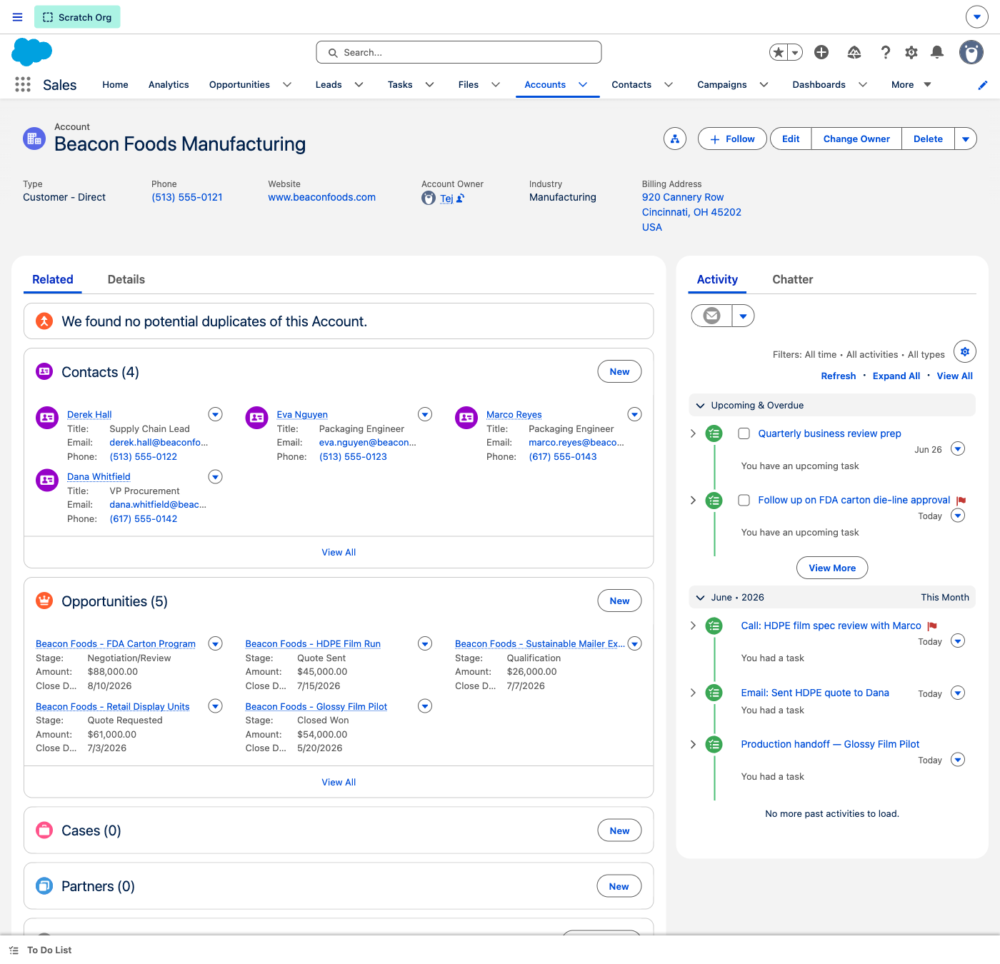
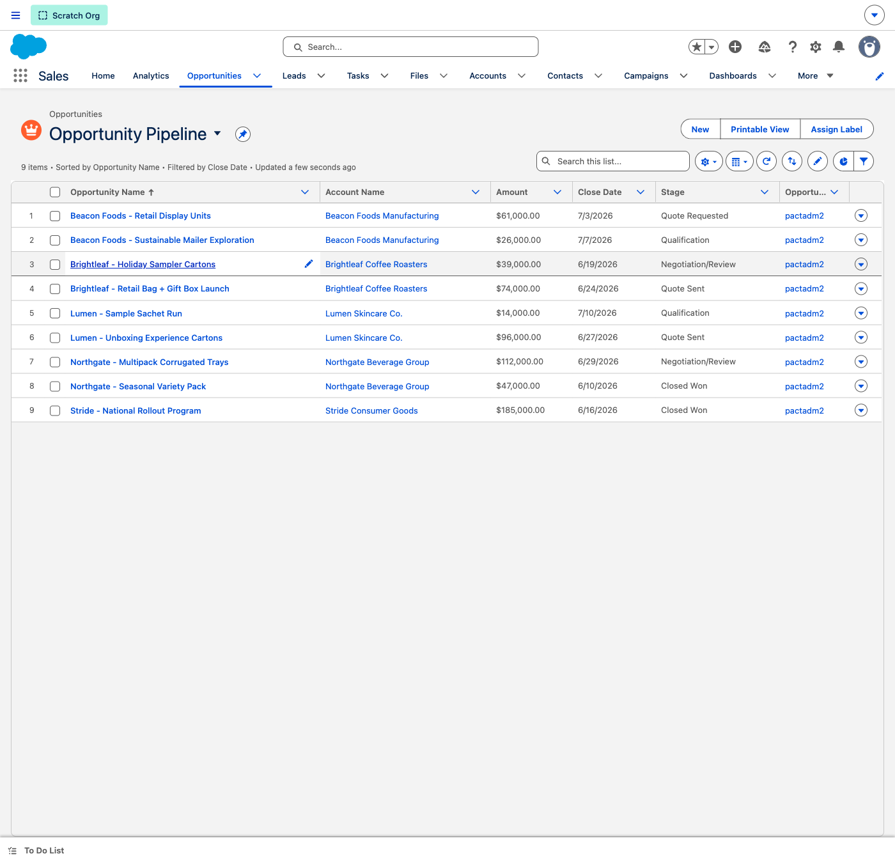
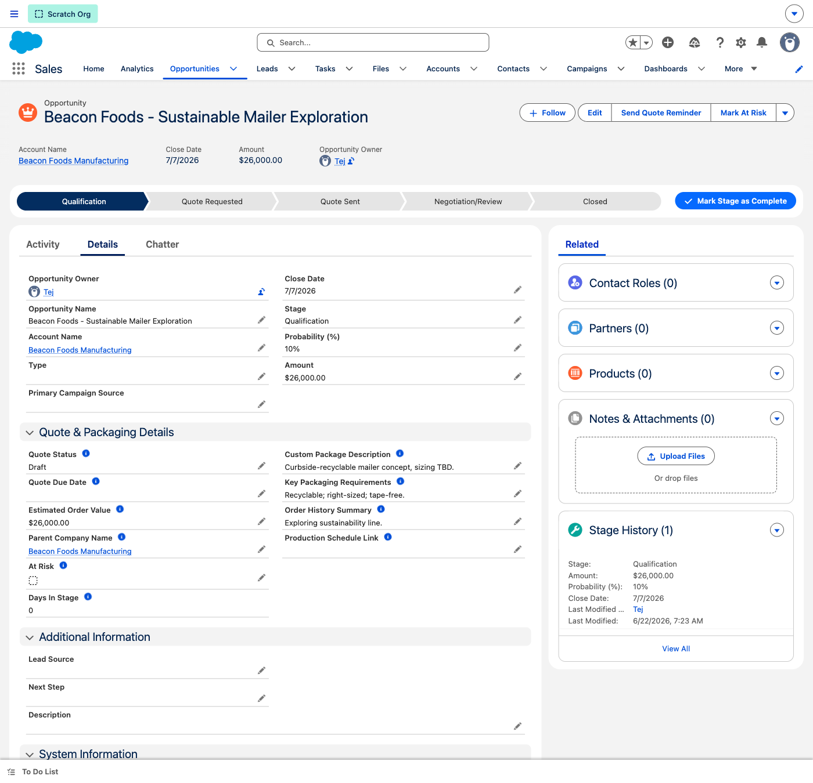
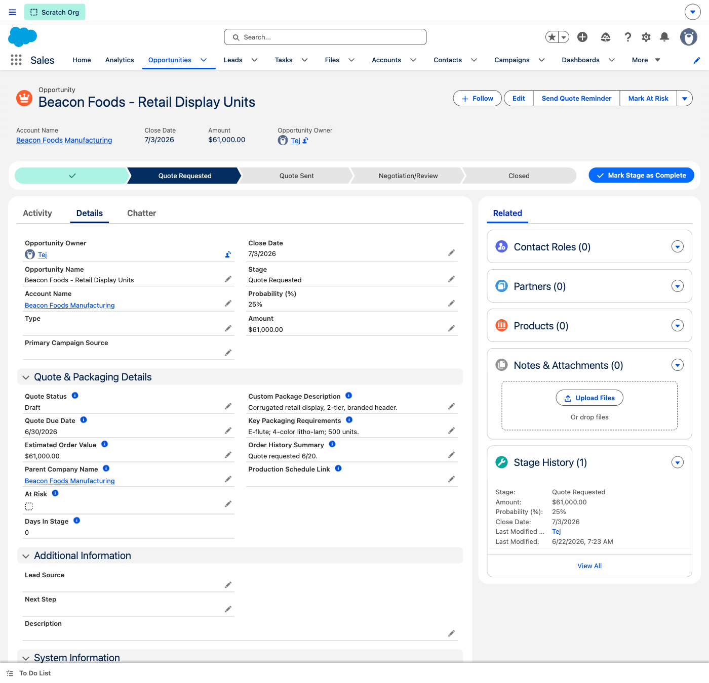
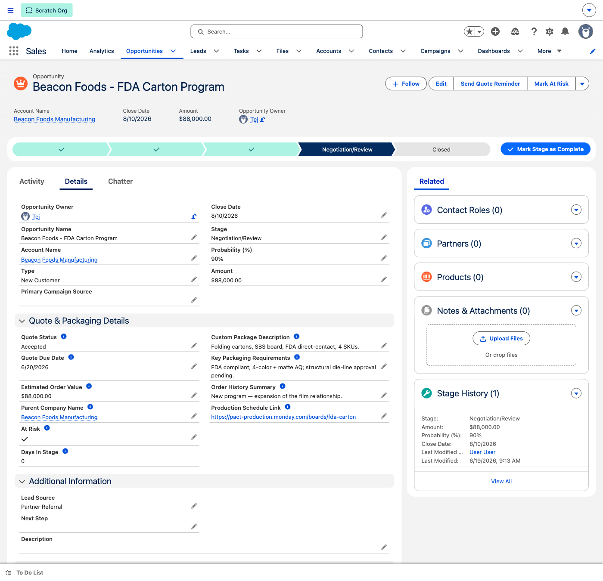
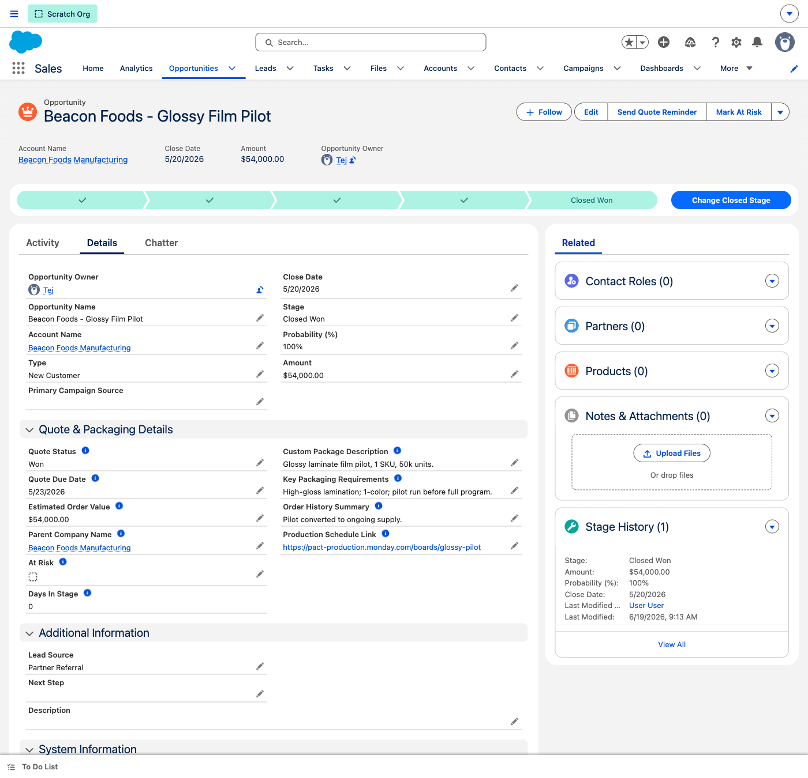
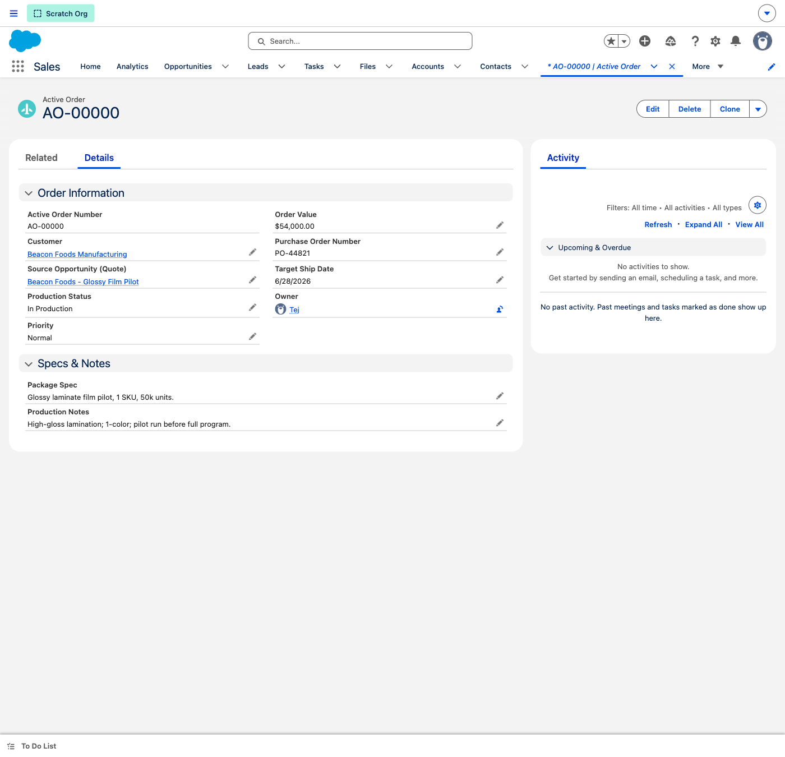
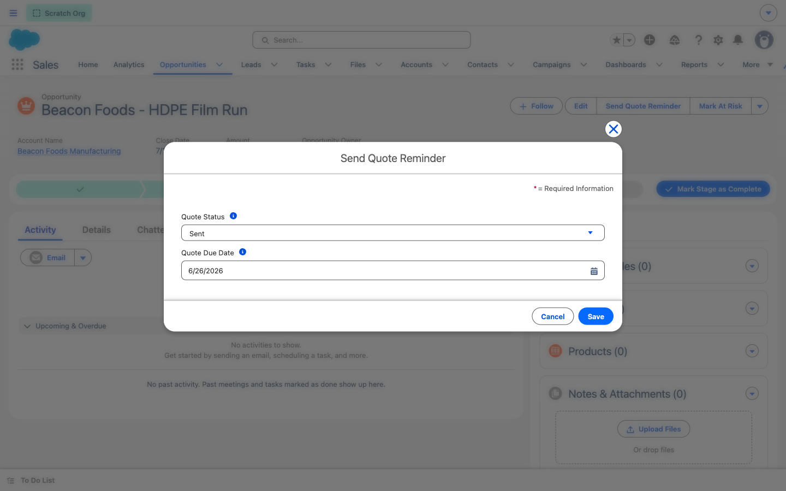
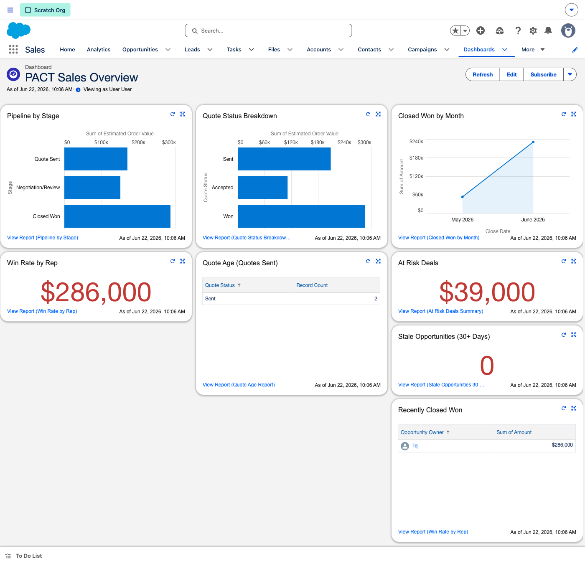

WHY THIS DEMO LANDS
PACT Inc is a custom-packaging manufacturer with a two-person sales team running quotes, customers, and production schedules across monday.com tabs, Gmail, QuickBooks, and Word templates. Josh's words: monday.com "isn't user-friendly for non-technical staff," and parent companies can't be cleanly linked to their contacts and orders.
This POC puts the whole quote motion into one Sales Cloud pane: every customer as an Account with its contacts and order history, every deal moving Qualification → Quote Requested → Quote Sent → Negotiation/Review → Closed Won on a guided path, with automation chasing stale quotes and handing won deals to production. The demo follows one customer — Beacon Foods Manufacturing — through that journey. All declarative: no hidden fees, no AI surcharges, trainable in an afternoon.
Crucially, PACT keeps quotes and production separate — Josh's own words: "I don't want quotes to be finished because they're not production." So quotes live on the Opportunity (the sales pipeline), and the moment a quote is won, a flow spins up a dedicated Active Order record for the production team to manage on its own status lifecycle. Not every quote becomes an order, and a won quote never clutters the production view. One simple flow, one custom object — exactly what the SE team scoped.
BEFORE YOU START
5-minute preflight checklist
- Log in 2 minutes before the call — Lightning's first paint is slow on a cold cache
- Pin these tabs in order:
Accounts, Opportunities, Dashboards
- Confirm the demo records load by quick-searching:
Beacon Foods Manufacturing, Beacon Foods - HDPE Film Run, Beacon Foods - FDA Carton Program
- Open the PACT Sales Overview dashboard once and click Refresh — components cache for 60 minutes
- Have this guide on your second monitor — every screenshot is what you should see in the org
- Have the enablement deck on the prospect-facing screen for the framing slides
- Step 9 exercises the Send Quote Reminder quick action live — you'll update the quote status/due date in front of them
★
Get Your Bearings — Anatomy of a Quote ORIENTATION
New to this org, or want to orient the prospect first? Tap each numbered marker on the Opportunity below to learn what every part of the quote page does — then walk the 9 steps.
TAP THE NUMBERS
Opportunity: Beacon Foods - HDPE Film Run — tap a marker to learn the page
Tap a blue number on the screenshot to learn that part of the quote.
1
Account 360 — Beacon Foods Manufacturing TIER 1
Open on Josh's #1 ask: one organized view of a customer. People, every quote, every touchpoint — on one screen, instead of three monday.com tabs.
CLICK PATH
Accounts tab → open Beacon Foods Manufacturing
WHAT TO SAY
This is the single customer record that replaces your monday.com "Customers" tab, the email threads, and the Word docs. The parent company sits at the top with its address and phone. Below, every contact at Beacon — the procurement VP, the packaging engineer. Then every quote you've ever worked with them, each showing its live stage. On the right, the full activity history — calls, emails, tasks. One screen, the whole relationship. This is exactly the parent-company-to-contacts link monday.com couldn't give you.
WHAT TO POINT OUT
- Contacts related list — multiple people under one parent company, each with role, email, phone
- Opportunities related list — five quotes for Beacon, each at a different stage, all in one place
- Activity timeline — auto-logged calls/emails/tasks; the full contact history Josh asked for

Beacon Foods Manufacturing — contacts, quotes & activity in one view
2
The Quote Pipeline — Every Deal in One View TIER 1
This list replaces monday.com's "Quotes" board. Every quote, every customer, every stage and value — one screen the whole team reads the same way.
CLICK PATH
Opportunities tab → List View Opportunity Pipeline
WHAT TO SAY
Here's every active quote across all your customers, with the amount, the close date, and the stage. A two-person team can scan this in seconds and know exactly what's in flight and what needs attention. And there are focused views one click away — My Active Quotes, This Quarter Pipeline, This Month's At-Risk Deals, Stale Opportunities over 30 days. No filtering, no hunting across tabs.
WHAT TO POINT OUT
- Stage column — the five-stage quote motion, the same for everyone
- Amount & Close Date — pipeline value and timing without opening a record
- Switch to This Month's At-Risk Deals or My Active Quotes to show triage by exception

Opportunity Pipeline — all quotes across the lifecycle
3
Stage 1 — Qualification THE PATH
Open one quote and follow it down the path. It starts at Qualification — an opportunity exists, but it isn't quoted yet.
CLICK PATH
Opportunities → open Beacon Foods - Sustainable Mailer Exploration
WHAT TO SAY
The Sales Path at the top is the quote's whole life, left to right. We're at "Qualification" — Beacon is exploring a recyclable mailer, we're scoping requirements, but no quote has gone out. Notice the path tells a non-technical rep exactly what stage they're in and what's next — no training manual required. That's the direct answer to "monday.com isn't user-friendly."
WHAT TO POINT OUT
- The Sales Path component — Qualification → Quote Requested → Quote Sent → Negotiation/Review → Closed Won
- Custom Package Description & Key Packaging Requirements — the spec captured from the first conversation
- Estimated Order Value — deal sizing even before a formal quote

Beacon Foods - Sustainable Mailer Exploration · Stage: Qualification
4
Stage 2 — Quote Requested THE PATH
The customer wants a number. Moving to this stage is what kicks off PACT's automation.
CLICK PATH
Opportunities → open Beacon Foods - Retail Display Units
WHAT TO SAY
When a deal moves to "Quote Requested," the Quote Status flips to Draft and a record-triggered flow automatically creates a follow-up task for the rep to build and send the quote. No one has to remember. The quote details — packaging category, requirements, target due date — are all captured on the record, so whoever builds the quote has everything in one place instead of digging through email.
WHAT TO POINT OUT
- Quote Status = Draft — the quote lifecycle field, set as the deal progresses
- Opportunity Quote Requested flow — auto-creates the "build & send quote" task on stage entry
- Key Packaging Requirements & Quote Due Date — the brief the rep quotes against

Beacon Foods - Retail Display Units · Stage: Quote Requested
5
Stage 3 — Quote Sent THE PATH
The quote is out the door. Now the clock matters — and PACT tracks it automatically.
CLICK PATH
Opportunities → open Beacon Foods - HDPE Film Run
WHAT TO SAY
This quote has been sent — Quote Status is "Sent," and there's a Quote Due Date on the record. A scheduled flow runs daily and, when a sent quote is within three days of its due date or overdue, it creates a follow-up task and alerts the rep. Quotes stop falling through the cracks. Everything about this deal — the package spec, the estimated value, the parent company, even a link to the production board — lives on one record.
WHAT TO POINT OUT
- Quote Status = Sent + Quote Due Date — the follow-up clock the daily flow watches
- Daily Quote Due Reminder flow — auto-tasks the rep before a quote ages out
- Production Schedule Link & Parent Company — the deal's spec and its company, one click apart
Beacon Foods - HDPE Film Run · Quote Status: Sent
6
Stage 4 — Negotiation/Review & the At-Risk Flag THE PATH
Deals that stall in negotiation are where revenue leaks. PACT flags them so nothing goes quiet.
CLICK PATH
Opportunities → open Beacon Foods - FDA Carton Program
WHAT TO SAY
This FDA carton program is in Negotiation/Review — pricing and die-line approval are in play. Notice the At Risk checkbox is set: a weekly scheduled flow sweeps deals stuck in negotiation past their window, flags them At Risk, and emails the team a summary. So a two-person team never loses a big deal just because it went quiet. This one's flagged because its quote due date has already passed.
WHAT TO POINT OUT
- At Risk = true — set automatically by the Weekly At Risk Summary flow
- This Month's At-Risk Deals list view + the dashboard At-Risk tile surface these instantly
- Quote Status = Accepted here — verbal yes, paperwork in review; the field tells the team where it really stands

Beacon Foods - FDA Carton Program · Negotiation/Review · At Risk
7
Stage 5 — Closed Won → Auto-Creates an Active Order THE PATH
The win — and the exact moment production begins, without the quote ever turning into a production item itself.
CLICK PATH
Opportunities → open Beacon Foods - Glossy Film Pilot
WHAT TO SAY
Here's the piece we built for you after the last call. When a quote is won, the path completes — and a flow automatically spins up a separate Active Order record for the production team. The quote stays a quote in your sales pipeline; production gets its own clean record to work from. That's your exact point, Josh — "I don't want quotes to be finished because they're not production." They never get tangled now. And because Closed Won is a real won stage, your revenue dashboards update the moment you mark it.
WHAT TO POINT OUT
- Quote Status = Won and the path fully lit, Qualification through Closed Won
- Active Order from Closed Won flow — one record-triggered flow creates the production Active Order automatically (carrying the customer, value, spec, and a link back to this quote)
- Quotes stay in the sales pipeline; production lives on its own object — the two are deliberately kept separate

Beacon Foods - Glossy Film Pilot · Closed Won · spawns an Active Order
8
Active Orders — Production, Kept Separate NEW
This is PACT's production board, rebuilt in Salesforce: a dedicated object the production team works, created automatically from won quotes — the direct answer to keeping quotes and production apart.
CLICK PATH
App Launcher → Active Orders → open AO-00000 (or open it from the won quote's Active Orders related list)
WHAT TO SAY
Every won quote lands here as an Active Order. The production team lives in this object — they never touch the sales pipeline, and sales never sees half-built production noise. Each order carries everything production needs: the customer, the package spec, the purchase order number, a priority (including Rush), a target ship date, and a link straight back to the originating quote. And it moves through its own status — Submitted → Scheduled → In Production → Finished → Ready to Ship → Shipped — the same flow you track on monday.com today, just cleaner. Once it ships, it drops out of the active list, exactly like you do now.
WHAT TO POINT OUT
- Production Status — the full production lifecycle (Submitted → Scheduled → In Production → Finished → Ready to Ship → Shipped); a guided Path is configured over this field for the production team
- Customer + Source Opportunity (Quote) — production sees who it's for and can click straight back to the originating quote
- Purchase Order Number & Priority — the PO Josh attaches to each order, plus a Rush flag for hot jobs
- "In Production" list view — the production team's working queue; shipped orders fall off automatically

AO-00000 · Beacon Foods · In Production — auto-created from the won quote
Talk track: four Active Orders are seeded across the production stages (Submitted, In Production, Ready to Ship, Shipped) so you can show the spread. AO-00003 was created live by the flow when its quote was won.
9
Send Quote Reminder — Live Quick Action LIVE
Do this one live. One button, two fields — the everyday move a rep makes without editing the whole record.
CLICK PATH
On a sent quote → click Send Quote Reminder (page header) → confirm status / due date → Save
WHAT TO SAY
When a rep follows up on a quote, they don't go field-hunting. One click on "Send Quote Reminder," confirm the quote status and due date, Save — done in five seconds. There's a matching "Mark At Risk" action right next to it. These quick actions are how a non-technical rep keeps the record current in the flow of a customer call — the friction monday.com created, gone.
WHAT TO POINT OUT
- Focused action — only the fields that matter, not the full edit page
- Quote Status & Quote Due Date updated in-context, in seconds
- Pair it with the Mark At Risk header action to show the same speed for flagging a stalling deal

Send Quote Reminder — quick action updating the quote in place
If you save a change — it's demo data, no harm. Reopen the action to restore the original values, or just leave it.
10
Command Center — PACT Sales Overview CLOSE
Close on the owner's view. Everything you just walked — pipeline, quote status, wins, at-risk — rolled up live.
CLICK PATH
Dashboards tab → open PACT Sales Overview → click Refresh
WHAT TO SAY
This is the single screen that replaces scrolling monday.com boards. Pipeline by Stage shows the whole quote book by value. Quote Status Breakdown shows how many are drafted, sent, accepted, won. Closed Won by Month and Win Rate by Rep show the results. At-Risk Deals surfaces anything slipping. Every tile is live against the same quotes we just walked — one source of truth, and no hidden fees to keep it running.
WHAT TO POINT OUT
- Pipeline by Stage & Quote Status Breakdown — the quote book two ways, by stage and by status
- Closed Won by Month & Win Rate by Rep — results, current the moment a deal is marked won
- At-Risk Deals — dollar value of deals the weekly flow has flagged
- Click any component to drill into the underlying report — eight reports back this dashboard

PACT Sales Overview — live pipeline, quote, win & risk metrics
If a tile shows "No data" — click the dashboard Refresh; components cache for 60 minutes and re-run their reports live.
⚙
The Automation Working Behind the Scenes REFERENCE
If the prospect asks "what's actually automated?" — here are the five flows live in this org.
On Quote Requested
Opportunity Quote Requested
Auto-creates the "build & send quote" task when a deal enters Quote Requested.
On Closed Won · NEW
Active Order from Closed Won
Creates a production Active Order (separate object) when a quote is won — carries customer, value, spec & a link back to the quote.
On update
Opportunity At Risk Flag
Evaluates and stamps the At Risk flag as deals change.
Scheduled · daily
Daily Quote Due Reminder
Tasks the rep when a sent quote is within 3 days of its due date or overdue.
Scheduled · weekly
Weekly At Risk Summary
Flags stalled negotiation deals At Risk and emails the team a summary.
Guided UI
Sales Path + Quick Actions
5-stage path, plus Send Quote Reminder & Mark At Risk header actions.
QUICK REFERENCE — STEP TO RECORD
Demo records at a glance
STEP 1 — HERO ACCOUNT
Beacon Foods Manufacturing
4 contacts · 5 quotes across every stage
STEP 2 — PIPELINE VIEW
Opportunities → Opportunity Pipeline
15 quotes across all 5 stages
STEP 3 — QUALIFICATION
Beacon Foods - Sustainable Mailer Exploration
STEP 4 — QUOTE REQUESTED
Beacon Foods - Retail Display Units
Quote Status: Draft
STEP 5 — QUOTE SENT
Beacon Foods - HDPE Film Run
Quote Status: Sent · due this week
STEP 6 — NEGOTIATION / AT-RISK
Beacon Foods - FDA Carton Program
At Risk flagged
STEP 7 — CLOSED WON
Beacon Foods - Glossy Film Pilot
Quote Status: Won · spawns an Active Order
STEP 8 — ACTIVE ORDERS
App Launcher → Active Orders → AO-00000
4 orders across the production stages
STEP 9 & 10 — LIVE + DASHBOARD
Send Quote Reminder on the HDPE quote
then PACT Sales Overview (Refresh first)
APPENDIX
Handling Tough Questions
"This needs to be usable by non-technical staff. Is it really that simple?"
That's the whole design point. The Sales Path tells a rep what stage a quote is in and what's next, in plain language. Quick actions ("Send Quote Reminder," "Mark At Risk") are one-click. List views are pre-built so no one creates filters. There's nothing to assemble — a new rep is productive the same day. It's the direct answer to "monday.com isn't user-friendly."
"Can we finally link a parent company to all its contacts and orders?"
Yes — that's the Account-to-Contact-to-Opportunity model you saw on Beacon Foods. One Account holds the company, its address, and billing; multiple Contacts attach to it; every quote links to both. There's also a Parent Company field on the quote itself. The fragmentation monday.com created is gone.
"What about hidden fees and AI surcharges? That burned us before."
Everything in this POC is declarative Sales Cloud — objects, fields, flows, Sales Path, reports, dashboards. No managed packages, no add-on AI products, no usage-based surprises. What you see is what it costs to run.
"We live in Gmail. Does email connect?"
Yes — the Gmail integration (Salesforce for Gmail) logs emails straight onto the matching Contact and Opportunity, which is what populates the activity timeline you saw on the account. Wiring it to your inboxes is a short Phase-2 setup; the data model is already ready to receive it.
"How do quotes not fall through the cracks with only two of us?"
Three automations cover it: entering Quote Requested auto-creates the build-and-send task; the daily flow chases sent quotes nearing their due date; the weekly flow flags stalled negotiation deals At Risk and emails a summary. The system does the remembering so the team doesn't have to.
"How do you keep quotes and production separate, like we do today?"
That's the core of this build. Quotes live on the Opportunity (your sales pipeline); production lives on a dedicated Active Order object. The instant a quote is marked Closed Won, one record-triggered flow creates an Active Order — carrying the customer, value, package spec, and a link back to the quote — and the production team works it on its own status lifecycle (Submitted → Shipped). The quote never "becomes" a production item, not every quote has to convert, and a won quote never clutters the production board. It's exactly the separation you described, automated.
"Can the dashboard slice the data more ways?"
Easily — all eight tiles render live today (pipeline by stage, quote status, quote age, wins by month, win rate, at-risk, stale, recently closed won). Each is backed by a standard report you can re-group, filter, or chart differently in minutes, and you can add tiles for anything in the data model without code.
"Is this real data, or a canned demo?"
It's a seeded demo dataset in your real trial org — customer accounts, fifteen quotes spread across every stage, contacts, and logged activities — so every screen reflects how the org behaves with live records. Advance a stage and watch the automation fire.